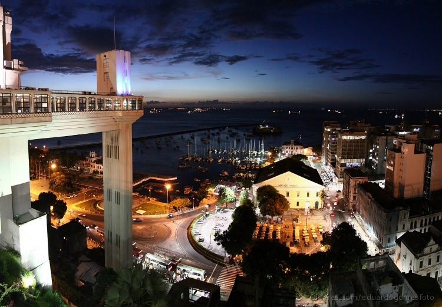

Salvador é uma cidade brasileira conhecida por ter uma baia nomeada como baía de Todos os Santos e por praias de grande beleza natural, patrimônio cultural da humanidade, preserva um conjunto arquitetônico que representa um pedaço vivo da história do Brasil, de que foi a primeira capital.
A cidade passou a ser descoberta pelos colonizadores no ano de 1510, quando um navio francês naufragou em terrasbainas foi colonizada por Diogo Álvares. Os donos das Capitanias eram chamados de donatários e Francisco Pereira Coutinho ganhou parte da território de Salvador, fundado na época como "Arraial do Pereira". Coutinho teve o comando do Arraial, mais tarde batizada de "Vila Velha" até 1549 na ocasião da chegada de Tomé de Souza, o primeiro governador geral do Brasil. Juntamente com Tomé de Souza desembarcaram em Salvador seis embarcações com uma comitiva de aproximadamente 10 mil pessoas para fundar sob ordens do rei de Portugal, a cidade de "São Salvador". Após o governo de Tomé de Souza, governaram o país Duarte da Costa e Mem de Sá, que teve o comando do país até 1572. Netse período a Bahia era a região que mais exportava açúcar, considerado na época o produto mais exportado do país.
A fama e a riqueza da provincia baiana, despertaram a cobiça de outros países no início do século 17. Salvador desenvolve-se em dois niveis distintos: a Cidade Baixa, na estreita planicie litorânea, e a Cidade Alta, localizada no platô que se ergue em escarpa abrupta, a sessentar metros do porto. A Cidade Baixa é núcleo das atividades portuárias e comerciais, sobretudo do setor atacadista. Na Cidade Alta os bairros residenciais contornam o centro histórico, que se caracteriza pelelo comércio varejista.